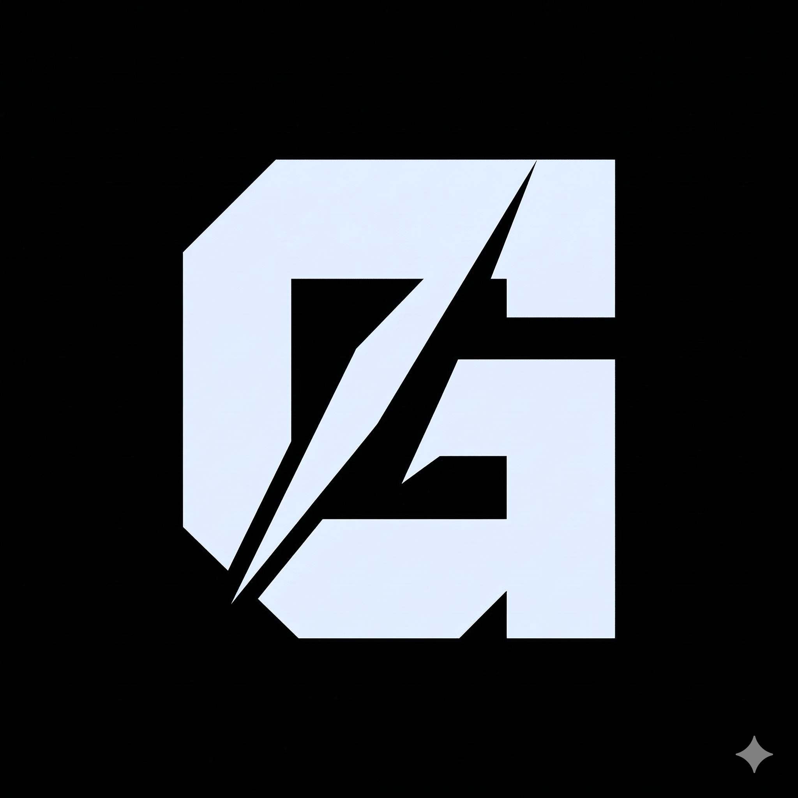
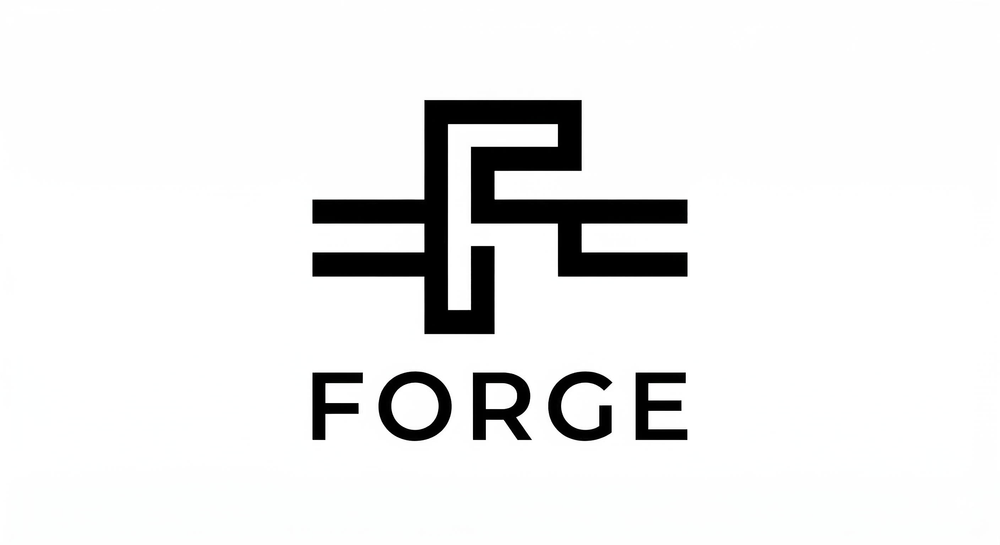

Already building it.
The technology infrastructure for Kashmir's next decade —
food systems, trade, intelligence. One flywheel, compounding.



Kashmir will not stay underestimated forever.
Every system I build is proof that geography is not destiny. Not a statement about the future — a description of what is already happening.
The first restaurant we onboarded refused to mark orders ready — they thought riders would arrive too early. That's not a bug. That's the real dataset. Every constraint like that makes the system smarter.


If you're building infrastructure,
investing in emerging market tech,
or just want to think out loud — reach out.